We knew that the shit was going down in San Francisco, so we sent an envoy to investigate. The birthplace of Critical Mass, pleas for drivers to stop at red lights tacked to the lamp-posts, shambling hairy creatures to be dodged at every turn - yes, it is an interesting place to be with one's bicycle. The true city was revealed to us, however, while our correspondent was the welcome guest of Kid Kool and Escue of the F.L.O., in the heart of the Mission.
Riding alongside the F.L.O. with the warm summer breezes at one's back and a full metal basket containing all the refreshments that one will need to while the night away - well, the reports we received tend to trail off, but we know enough.
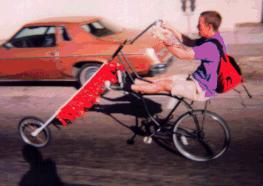 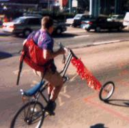
Best of all, their home base is around the corner from Pedal Revolution, a used bike store and community organization. Sheff, the director, had recently started cranking out choppers and tallbikes. Our agent saw him attempt the two-person freestanding lean with another tallbiker three times at stops during Critical Mass, and watched them slowly teeter, fall over, and take out a nearby cyclist each time.
Since we were neighbors, we borrowed the bikes at any excuse.
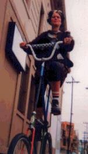 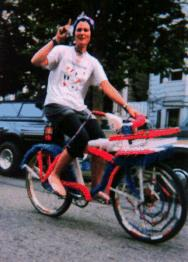
Escue rides in the air serenely, but she's really happiest on her all-American shag covered cruiser with a basket full of capitalist propaganda.
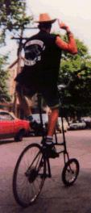 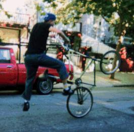
Kid Kool, though - damn! Only known human able to do a track stand on a tallbike. He developed a few new tricks with our envoy - the freestanding mutual madison-style pushoff, the jungle gym torture test, and the bronco wheel.
| 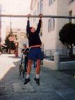 | 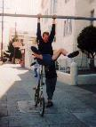 | 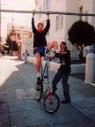 | 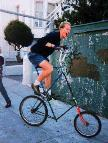 |
|
Most revolutionary by far, though, was the assisted hanging mount, a maneuver which will surely come in handy when we need to launch a fleet of tallbikes in a hurry. |
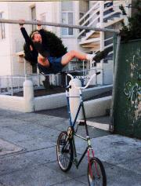 | ||
|
The hanging dismount,
in which
the weary pilot lets the bike take care of itself, was far easier to execute. |
|||
| Copyright 2003 Megulon Five <megulon5@dclxvi.org>. |
|
This work is licensed under a Creative Commons License. | Last modified 16 May 1999. |